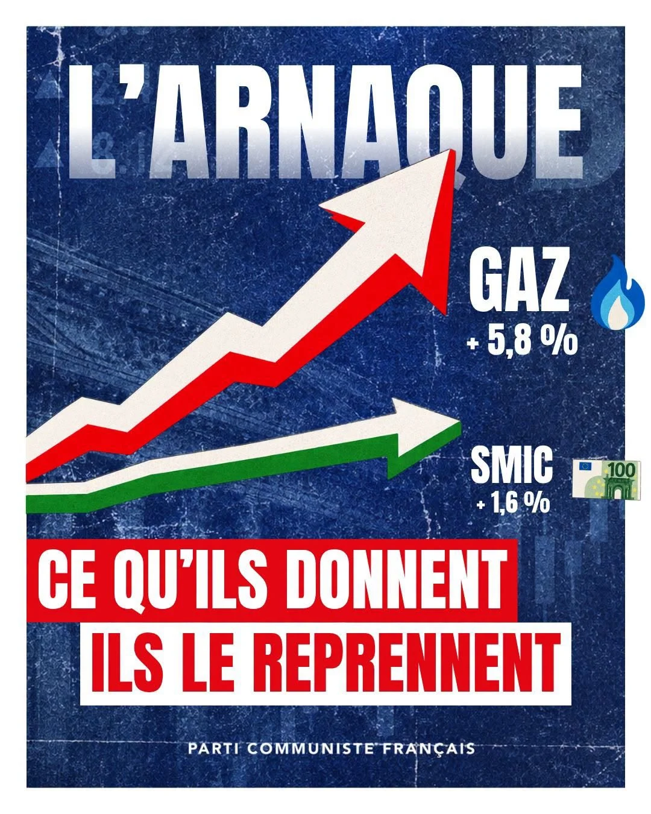

Partage du PCF national
Salaires et énergie. Le PCF défend une hausse du SMIC et un pôle public
Date indiquée par Facebook · 13 novembre 2026
Publication originale du PCF national
📢 Le gouvernement communique sur une hausse du SMIC qui aurait, de toute façon, eu lieu à la rentrée. Pendant ce temps, les factures d’énergie explosent en plein hiver ! Ce qu’on nous donne d’un côté, on nous le reprend au double de l’autre.
🚩 Face à cela, nous défendons la nationalisation de TotalEnergies et la création d’un grand pôle public de l’énergie, pour reprendre le contrôle de la production et des prix. Nous souhaitons une hausse généralisée des salaires, pour tous les travailleurs, ainsi qu’une hausse des pensions.
Repères éditoriaux
Nous relayons la position du PCF sur les salaires et les factures d’énergie. Le texte défend la nationalisation de TotalEnergies et un pôle public de l’énergie.

Sources
PCF national · publication relayée par le PCF 79 · fil Facebook · FB-1467839078862674
À lire aussi · Le PCF place la paix au cœur de son appel au 1er mai